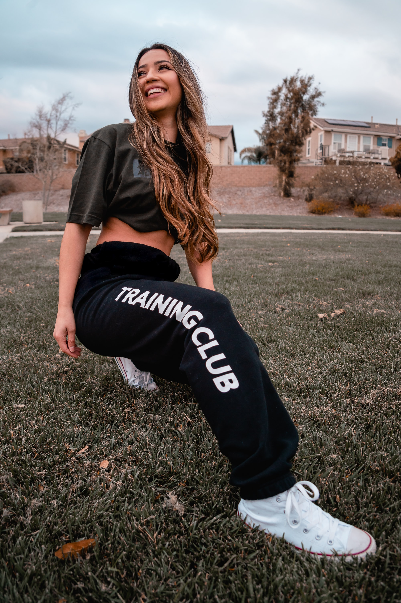

Kailani
出産を機に激太りし、様々0なダイエット法を試し、失敗を繰り返した過去を持つ。 その後、筋トレや食事改善によってダイエットに成功。自身の経験を活かし、現在はパーソナルトレーナーをしており、これまで1000人以上の肉体改造に成功。 またYouTubeで1000万回再生された動画を持つ、筋トレインフルエンサーとしても活動している。 YouTubeやInstagramではトレーニングやダイエットに良い食事法を発信している。